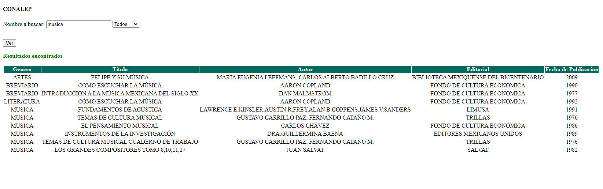
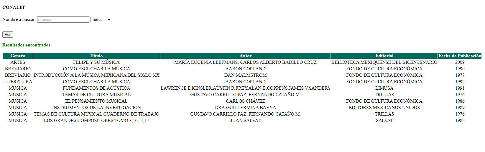
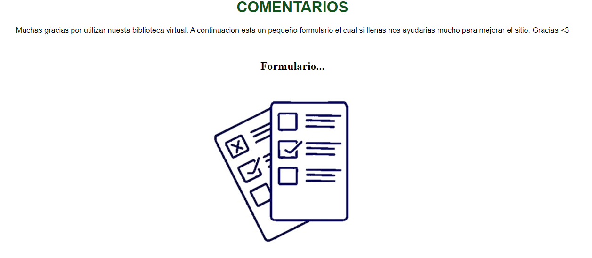

Menu interactivo
En el menu se busca que la pagina sea mas dinamica, se implementaron 3 opciones. En la primera esta el inicio, esta es la pagina principal en ella encontraras lo mas importante que es el buscador, en la segunda opcio esta el como se usa la biblioteca virtual que es en donde estamos aqui solo te explicamos como usarla para que no te rersulte complicado y la tercera opcion son los comentarios en donde podras dejar un comentario que nos sirva de retroalimentacion.
Buscador
Para usar el buscador solo basta con posicionarnos en la parabra que dice buscar dentro de nuetra pagina principar, al darle click nos dirigira a otra pagina en donde nos permitira buscar los libros por titulo, autor y editorial.
 
Comentarios
Aqui encontraremos un breve mensaje y una imagen que al darle click nos dirijira a un forms el cual tendremos que llenar donde se nos pediran datos como nombre, opinion hacerca de la pagina y algun mensaje que nos sirva de retroalimentacion entre otras cosas.

Redes sociales
Estas las encontraremos al final de la pagina principal y al darle click a cada una de las imagenes no dirigira a esa red sociial, ya sea facebook, twitter y youtube.